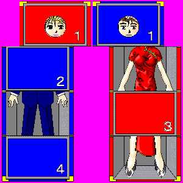

|
どうも、ＫＩＳＳプログラムにより、首のすげ替えという、かなり特殊というか、個人の嗜好を選ぶというような作品です。 実は、ＫＩＳＳというシステムを知った当時から、これを利用したＴＳ系作品という考えは、念頭にあったのですが、やはり、ビジュアル的には限られた枚数のＣＧの中で、文章を使わずにＴＳ経過を説明するのは難しく、その後とん挫しておりました。 その後、八重洲二世さんの「奇術」から、ビジュアル化へのヒントを頂き、「ＭＡＧＩＣ ＢＯＸシリーズ」（シリーズを付けるほど大層なもんじゃないけどね。）によって、ビジュアル表現の目処がついたこともあって、この度、一応の完成に至った次第です。 |